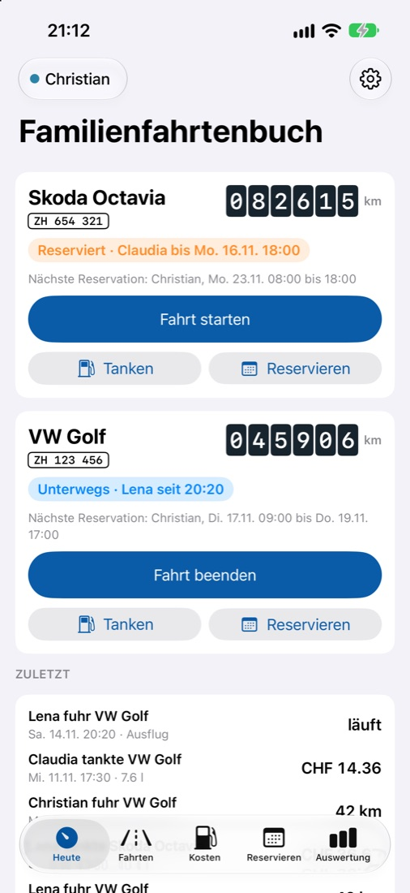
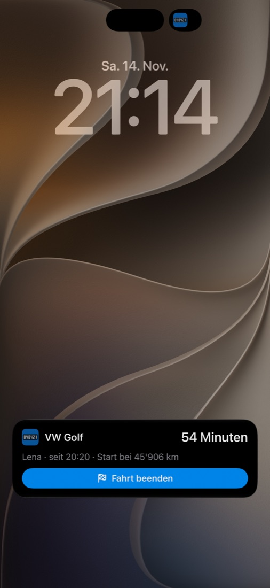
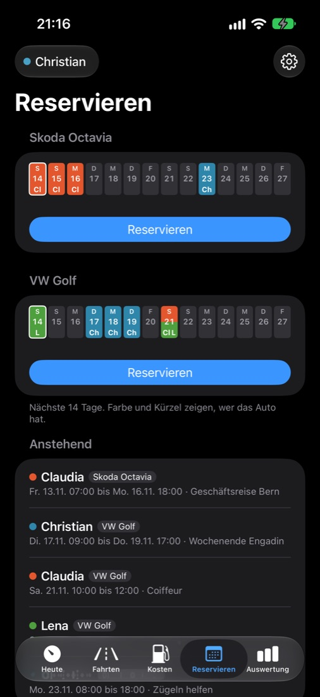
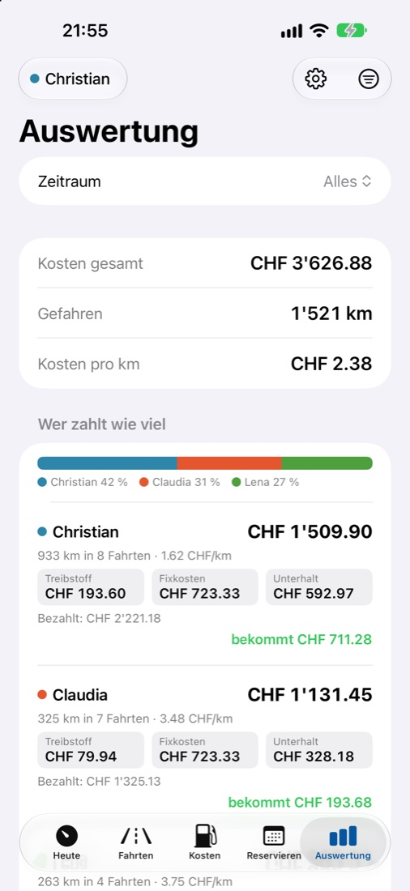
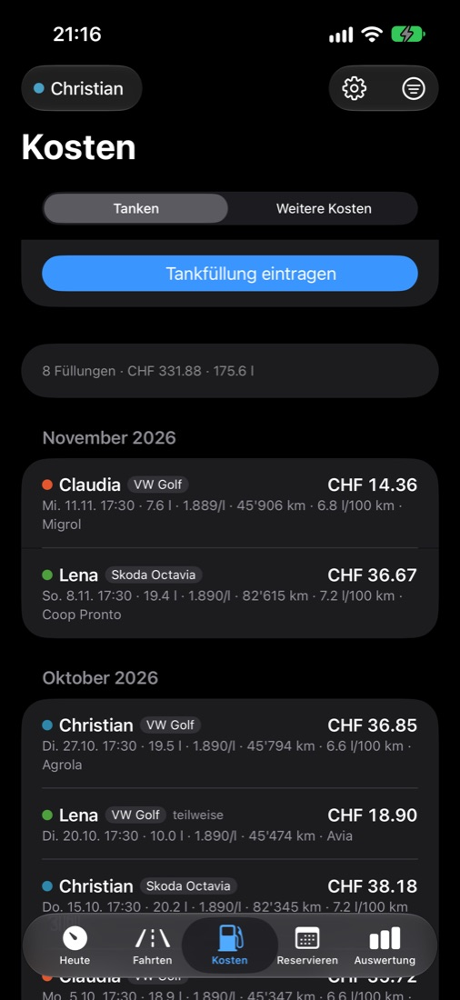
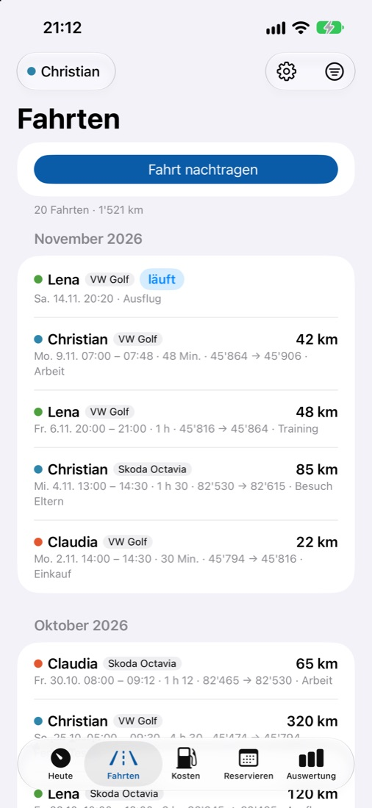
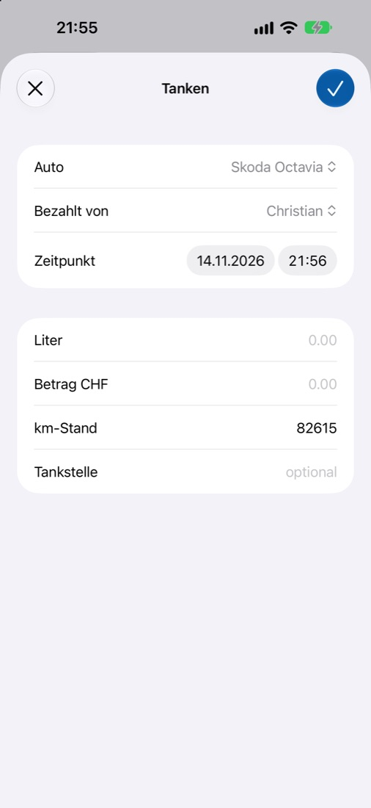

Fahrten, Tanken oder Laden, Kosten und Reservationen für die Autos der Familie an einem Ort, für Benziner, Diesel, Elektroautos und Plug-in-Hybride. Die App verteilt die Kosten nach einstellbaren Schlüsseln und zeigt, wer wem wie viel schuldet. Alle Familienmitglieder tragen auf ihrem eigenen iPhone ein, der Abgleich läuft über iCloud.







Bilder mit Beispieldaten.
Was die App kann
- Fahrten – Fahrt starten und beenden mit Kilometerstand oder später nachtragen. Während der Fahrt zeigt der Sperrbildschirm die Fahrzeit mit dem Knopf «Fahrt beenden».
- Tanken und Laden – Betrag und Kilometerstand eintragen, auch für Elektroautos und Plug-in-Hybride.
- Weitere Kosten – Versicherung, Service, Reparaturen und alles, was sonst anfällt.
- Reservieren – Das Auto für einen Zeitraum reservieren und die Belegung der nächsten 14 Tage auf einen Blick sehen. Eine Mitteilung kommt, wenn jemand reserviert, verschiebt oder löscht.
- Faire Abrechnung – Kosten pro Auto und Kostenart verteilen: nach Kilometern, zu gleichen Teilen oder mit festen Anteilen. Die App zeigt, wer wem wie viel schuldet, und verbucht den Ausgleich. Export als Tabelle (CSV).
- Für die ganze Familie – Über iCloud geteilt, jede Person mit dem eigenen iPhone, wahlweise mit dem Recht zum Bearbeiten oder nur zum Ansehen. Wer neu dazukommt oder austritt und welche Autos verkauft wurden, verrechnet die App richtig.
- Siri und CarPlay – «Fahrt starten mit Fahrtenbuch» geht auch im Auto und bei gesperrtem iPhone.
- Vier Sprachen – Deutsch, Französisch, Italienisch und Rätoromanisch.
Bewusst einfach
Familienfahrtenbuch ist für Familien gemacht, die sich ihre Autos teilen, nicht für Firmen oder Flotten. Deshalb kommt nicht jede denkbare Funktion hinein, sondern nur, was es dafür wirklich braucht: wer wann gefahren ist, was getankt und bezahlt wurde, wer das Auto reserviert hat und wie die Kosten am Ende fair aufgeteilt werden.
Weniger, dafür richtig. Ohne Konto, ohne Werbung, ohne eigenen Server. Die Daten bleiben in der Familie.
Fragen, Fehler oder Wünsche?
support@familienfahrtenbuch.chHäufige Fragen
Wie lade ich jemanden in die Familie ein?
In der App unter Einstellungen → «Familie einladen …» einen Link verschicken, zum Beispiel über Nachrichten.
Die eingeladene Person installiert die App, öffnet sie einmal und tippt danach auf den Link. Passiert nach dem Antippen nichts, den Link einfach nochmals antippen.
Was braucht es?
Ein iPhone mit iOS 17 oder neuer. Zum Teilen mit der Familie müssen alle mit ihrer Apple-ID bei iCloud angemeldet sein. Die Daten der Familie liegen in der iCloud der Person, die eingeladen hat, und zählen zu ihrem iCloud-Speicher (meist nur wenig Platz).
Änderungen kommen auf dem anderen iPhone nicht an
Der Abgleich über iCloud kann einige Minuten dauern. Automatisch im Hintergrund klappt er nur, wenn die Hintergrundaktualisierung für die App eingeschaltet und der Stromsparmodus aus ist. Sonst kommen Änderungen erst, wenn die App geöffnet wird. Bitte prüfen:
- iOS-Einstellungen → Allgemein → Hintergrundaktualisierung: eingeschaltet, auch bei Familienfahrtenbuch.
- Stromsparmodus aus. Die App im App-Umschalter nicht wegwischen.
- Beide iPhones sind mit dem Internet verbunden und bei iCloud angemeldet.
- In der App unter Einstellungen stehen «Zuletzt geladen» und «Zuletzt hochgeladen». Steht dort eine Meldung «iCloud-Abgleich: …», schicken Sie uns diese bitte.
- Die App einmal ganz schliessen und wieder öffnen.
Was zeigt die Live-Anzeige während einer Fahrt?
Solange deine Fahrt läuft, zeigen Sperrbildschirm und Dynamic Island das Auto, die Fahrzeit und den Knopf «Fahrt beenden». Der Knopf öffnet direkt das Formular für den Kilometerstand. Läuft eine Fahrt seit 12 Stunden, erinnert die App daran, sie zu beenden.
Beim ersten Mal fragt iOS, ob die App Live-Aktivitäten zeigen darf. Ein- und ausschalten lässt sich das in den iOS-Einstellungen unter Familienfahrtenbuch → Live-Aktivitäten. Länger als 8 Stunden zeigt iOS eine Live-Anzeige nicht.
Wie funktioniert die App mit Siri?
Sag zum Beispiel:
- «Fahrt starten mit Fahrtenbuch»
- «Fahrt mit VW Golf starten in Fahrtenbuch» (mit dem Namen deines Autos)
- «Fahrt beenden mit Fahrtenbuch»
- «Tanken eintragen mit Fahrtenbuch»
Siri versteht die Befehle in der Sprache, die in den iOS-Einstellungen für Siri gewählt ist: Deutsch (auf Hochdeutsch gesprochen), Französisch oder Italienisch, nicht Rätoromanisch.
Siri fragt nach, was fehlt: das Auto, wenn es mehrere gibt, beim Beenden den Kilometerstand, beim Tanken oder Laden Betrag und Kilometerstand. Gebucht wird auf die Person, die in der App oben links als «ich» gewählt ist. Fahrt starten und beenden gehen auch bei gesperrtem iPhone und im Auto mit CarPlay, Tanken und Laden erst nach dem Entsperren.
Dieselben Befehle stehen in der Kurzbefehle-App und lassen sich auf die Aktionstaste legen. In der App unter Einstellungen → «Siri und Kurzbefehle» sind alle Sätze aufgelistet.
Ich bekomme keine Mitteilungen bei Reservationen
Jedes iPhone erzeugt die Mitteilung selbst, sobald der Abgleich die Änderung gebracht hat. Der Schalter «Mitteilungen bei Reservationen» in den Einstellungen gilt deshalb nur für das eigene iPhone. Zusätzlich muss die App in den iOS-Einstellungen Mitteilungen senden dürfen.
Wichtig: Ohne Hintergrundaktualisierung oder im Stromsparmodus kommt die Mitteilung erst, wenn die App geöffnet wird. Auch sonst entscheidet iOS selbst, wann es die App im Hintergrund weckt; eine Mitteilung kann deshalb einige Minuten später kommen.
Jemand fährt nicht mehr mit, ein Auto wurde verkauft
Personen in den Einstellungen «Austreten lassen …», Autos «Als verkauft markieren …». Beide bleiben mit ihren Einträgen in der Abrechnung, damit der Ausgleich stimmt, erscheinen aber nicht mehr in den Auswahllisten.
Wie verlasse ich eine Familie oder lösche alle Daten?
Eine Familie verlassen: Einstellungen → «Teilnehmer ansehen». Alle Daten der Familie löschen: Einstellungen → «Auf Werkseinstellungen zurücksetzen». Das löscht die Daten auch bei allen Eingeladenen.
Geht das auch mit einem Elektroauto?
Ja. Beim Auto in den Einstellungen als Antrieb «Elektro» wählen. Dann heisst es «Laden» statt «Tanken». Strom wird in der Abrechnung wie Treibstoff nach den gefahrenen Kilometern verteilt. Mit Siri: «Laden eintragen mit Fahrtenbuch».
Bei einem Plug-in-Hybrid als Antrieb «Plug-in-Hybrid» wählen (ab Version 1.4). Dann gibt es «Tanken/Laden», und im Formular wählst du, ob getankt oder geladen wurde. Siri fragt nach.
Gibt es die App auch auf Französisch, Italienisch oder Rätoromanisch?
Ja, ab Version 1.4. Die App folgt der Sprache des iPhones. Eine andere Sprache nur für diese App lässt sich in der App unter Einstellungen → «Sprache» wählen, danach die App einmal ganz schliessen und neu öffnen. Französisch und Italienisch sind mit künstlicher Intelligenz (KI) übersetzt, Rätoromanisch mit ALAS, dem Übersetzer der Lia Rumantscha. Hinweise auf Fehler nehmen wir gerne entgegen. Siri versteht die Befehle auf Deutsch, Französisch und Italienisch.
Was kostet die App?
Nichts. Keine Werbung, keine Abos.
Was passiert mit meinen Daten?
Die App sammelt keine Daten. Was Sie eintragen, liegt auf Ihrem iPhone und in iCloud, sichtbar nur für Ihre Familie. Wir haben keinen Zugriff darauf. Einzelheiten in der Datenschutzerklärung.